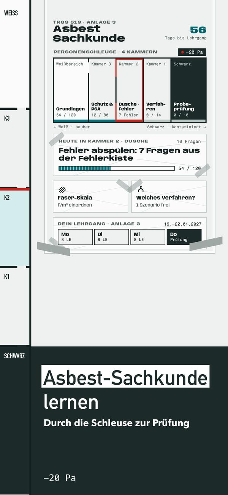
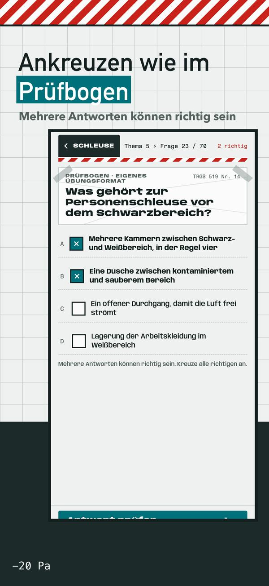
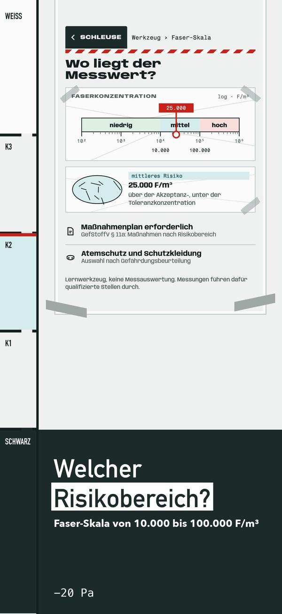

Asbestschein Prüfung & Fragen
Einmalkauf – kein Abo. Asbest Sachkunde TRGS 519 bereitet dich auf die Prüfung am Ende des Sachkundelehrgangs vor: großer Lehrgang nach Anlage 3 (Abbruch, Sanierung, Instandhaltung) oder Anlage 4C (ASI-Arbeiten geringen Umfangs). Dein Lernweg führt durch die vier Kammern der Personenschleuse – vom Weißbereich bis zur Probeprüfung im Schwarzbereich. Stand: GefStoffV seit Dezember 2024.



Bald im App Store